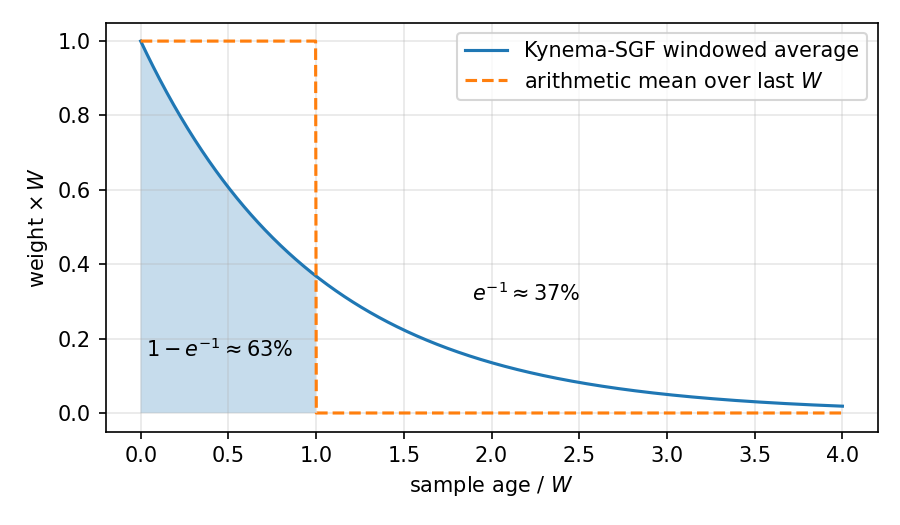
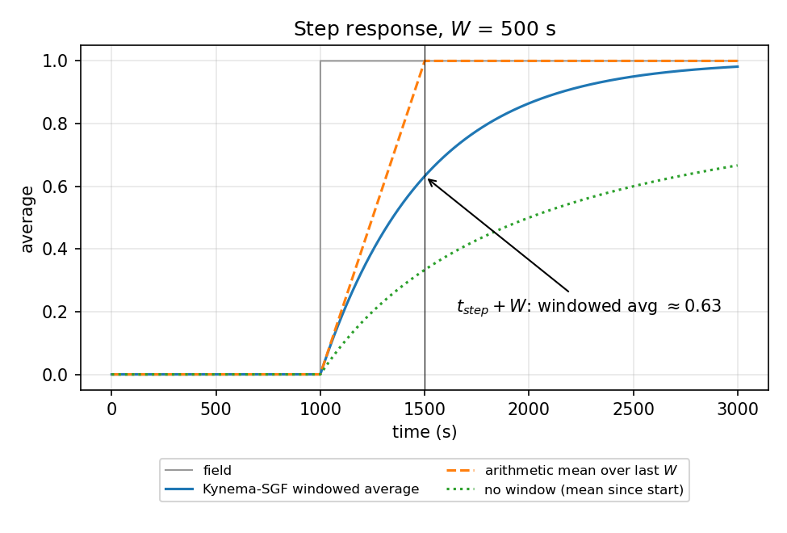

Section: Averaging
This section controls data-averaging actions supported within
Kynema-SGF.
Averaging is included as one of the identifiers of
post-processing by
incflo.post_processing = averaging.
Time-averaging can be done to compute the means of any variable and
is denoted by ReAveraging. The code will add the prefix _mean
to any variable that is time-averaged.
Reynolds stresses can also be computed using the ReynoldsStress averaging
type.
Note that to compute the Reynolds stresses, the mean of the velocity
field is required.
- averaging.averaging_window
type: Real, optional, default = huge number (no window)
Specify the averaging window over which the time-averaging is done. When no window is given, the result is the arithmetic time mean over the entire averaging period. When a window is given, the average is an exponentially weighted moving average, not an arithmetic mean over the last
averaging_windowof simulation time. See Behavior of the averaging window for details.
- averaging.averaging_start_time
type: Real, optional, default = 0
Specify the time to start computing averages.
- averaging.averaging_stop_time
type: Real, optional, default = simulation end time
Specify the time to stop time-averaging.
- averaging.averaging_time_interval
type: Real, optional, default = -1. (off)
Specify an interval of simulation time at which to do averaging. This allows for the averaging to take place only at instances that correspond to the averaging interval, which can be useful for phase averaging in contexts like periodic domains, regular waves, or fixed rotor speed simulations. When used with an averaging start time, the interval starts relative to the averaging start time.
Example:
incflo.post_processing = averaging
averaging.type = TimeAveraging
averaging.labels = means stress
averaging.averaging_window = 10.0
averaging.averaging_start_time = 0.0
averaging.means.fields = velocity
averaging.means.averaging_type = ReAveraging
averaging.stress.fields = velocity
averaging.stress.averaging_type = ReynoldsStress
Behavior of the averaging window
Let \(t_0\) be averaging_start_time, \(W\) be
averaging_window (a duration in seconds), and \(t\) be the
current simulation time, so that \(t - t_0\) is how long averaging
has been running. The behavior of ReAveraging has two regimes:
Averaging has run for no longer than \(W\) (\(t - t_0 \le W\)): the average is the arithmetic mean of all samples since \(t_0\). The window has no effect yet. This is also the behavior for the whole run if
averaging_windowis not set.Averaging has run for longer than \(W\) (\(t - t_0 > W\)): the average is no longer a plain mean. Each update is
\[\bar{f}_{new} = \bar{f}_{old}\left(1 - \frac{\Delta t}{W}\right) + f\,\frac{\Delta t}{W}\]where \(\bar{f}_{old}\) is the previous average, \(f\) is the current field value, and \(\Delta t\) is the time since the last averaging update.
This is an exponentially weighted moving average (a first-order low-pass filter with time constant \(W\)): a sample of age \(a\) has weight proportional to \(e^{-a/W}\), and old samples are down-weighted but never dropped. This form is used because:
it only stores the current average, whereas an arithmetic mean over the last \(W\) seconds would require keeping every time step in the window in memory for the entire domain, and
recent samples count more, so the mean follows a slowly varying background trend instead of being dominated by old data.


2 Weight given to a sample as a function of its age, for the windowed average in Kynema-SGF (solid) and for an arithmetic mean over the last \(W\) seconds (dashed). Only about 63% of the weight comes from the last \(W\) seconds; the remaining 37% comes from older samples.
Important
The windowed average is not the arithmetic mean over the last
\(W\) seconds. For example, with averaging_window = 500 and
averaging_start_time = 0, suppose a field steps from 0 to 1 at
\(t = 1000\) s. The mean over \((1000, 1500]\) is 1, but the
windowed average at \(t = 1500\) s is only about 0.63, as shown
below.


3 Response of the average to a field that steps from 0 to 1 at \(t = 1000\) s, with \(W = 500\) s. One window after the step, the windowed average has only reached \(1 - e^{-1} \approx 0.63\), whereas an arithmetic mean over the last \(W\) seconds would have reached 1.
To obtain an arithmetic mean over a period of interest, omit
averaging_window and bound the period with averaging_start_time
and averaging_stop_time.